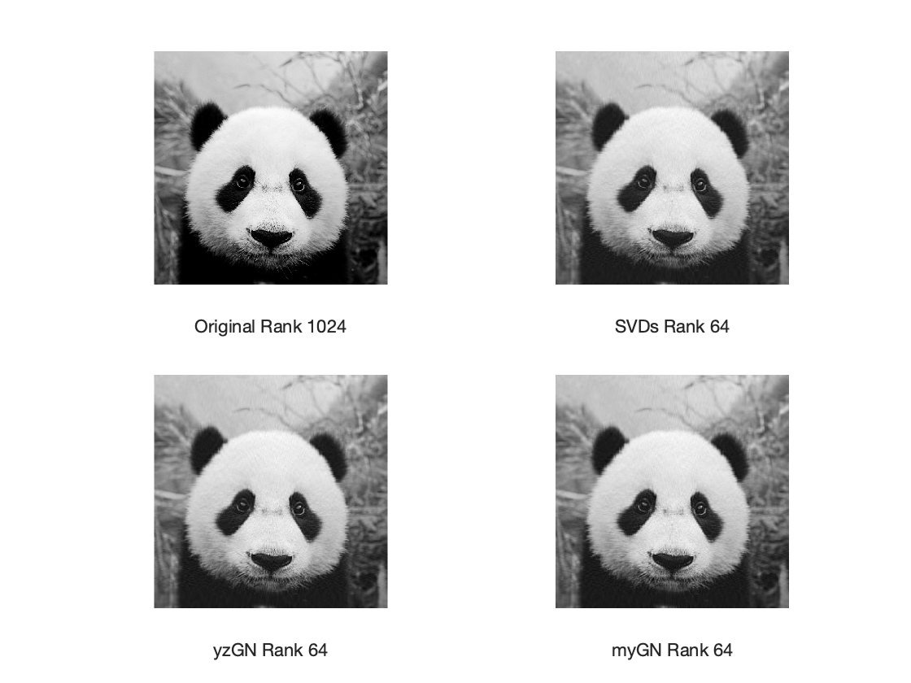

close all; clear
im = 1;
if isempty(im) || im > 1
load Panda2; im = 2;
else, load Panda1; im = 1;
end
M0 = Panda;
[m,n] = size(M0);
nrm0 = norm(M0,'fro')^2;
fprintf('image size: m = %i, n = %i\n',m,n);
k = 64*im;
tol = 5e-3;
maxit = 100;
fprintf('m = %i, n = %i, k = %i, tol = %.e\n\n',m,n,k,tol)
A = M0*M0';
nrmA = norm(A,'fro');
A = A / nrmA;
opts.tol = tol;
tic;
[U1,S1,V1] = svds(M0,k);
M1 = U1*S1*V1';
fprintf('SVDs ... '); toc
tic; X0 = randn(m,k);
[X2,iter2] = yzGN(A,X0,tol,maxit);
[U2,~] = qr(X2,0);
M2 = U2*(U2'*M0);
fprintf('yzGN ... '); toc
subplot(221); imshow(M0,[]);
xlabel(['Original Rank ' num2str(min(m,n))])
subplot(222); imshow(M1,[]);
xlabel(['SVDs Rank ' num2str(k)])
subplot(223); imshow(M2,[]);
xlabel(['yzGN Rank ' num2str(k)])
shg
if exist('myGN','file')
tic;
X0 = randn(m,k);
[X3,iter3] = myGN(A,X0,tol,maxit);
[U3,~] = qr(X3,0);
M3 = U3*(U3'*M0);
fprintf('myGN ... '); toc
subplot(224); imshow(M3,[]);
xlabel(['myGN Rank ' num2str(k)])
end
fM = @(M).25*norm(M-M0,'fro')^2/nrm0;
rU = @(U)norm(A*U-U*(U'*A*U),'fro');
if 0 < 1
fprintf('\nSVDs : fM = %.4e, rU = %.4e\n',fM(M1),rU(U1));
fprintf('iter %3i: fM = %.4e, rU = %.4e\n',iter2,fM(M2),rU(U2));
if exist('M3','var')
fprintf('iter %3i: fM = %.4e, rU = %.4e\n\n',iter3,fM(M3),rU(U3));
end
end
image size: m = 1024, n = 1024
m = 1024, n = 1024, k = 64, tol = 5e-03
SVDs ... Elapsed time is 0.812708 seconds.
yzGN ... Elapsed time is 0.086857 seconds.
myGN ... Elapsed time is 0.152083 seconds.
SVDs : fM = 4.9839e-04, rU = 1.1728e-15
iter 16: fM = 5.0739e-04, rU = 1.9619e-05
iter 16: fM = 5.0761e-04, rU = 2.2270e-05
